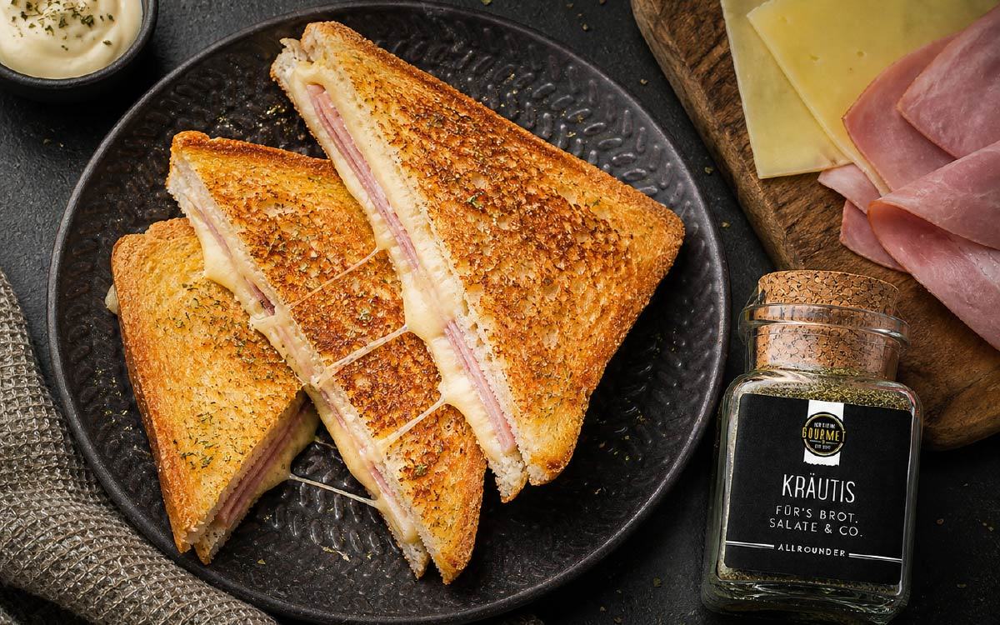

Man nehme 2 Scheiben Toastbrot, 1 Scheibe Schinken, 1 Scheibe Käse, Butter und etwas Salz. Zuerst bestreicht man die Toastscheiben mit Butter. Dann legt man den Schinken auf eine Scheibe Toast und darauf den Käse. Die zweite Scheibe Toast wird darauf gelegt. Anschließend wird der Toast in einem Toaster oder einer Pfanne goldbraun gebraten. Zum Schluss kann man den Toast noch mit etwas Salz bestreuen und servieren. Guten Appetit!
